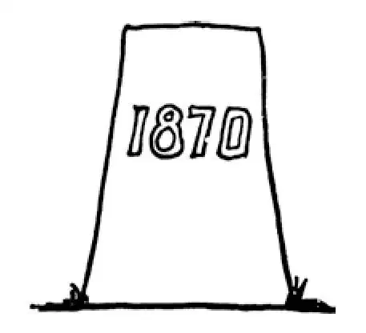

81
Three New Postage Stamps
三张新邮票

LET us look backward a minute to see what had been going on in Europe since the time of Napoleon.
After Napoleon was sent to Elba, the French had to have another ruler. They wanted their old kings back again. The family name of their old kings was Bourbon, and the French thought they ought to have a Bourbon ruler over them. Accordingly they tried out three Bourbons—one after the other—all relatives of their last king, whom they had beheaded.
All of them proved no good. The French people had given the Bourbon family a good tryout, and so at last they stopped worrying with kings and started another republic.
Now, a republic has a president instead of a king, so the people had to choose a president; and whom do you suppose they picked out? Why, the nephew of Napoleon. The nephew of Napoleon was named Louis Napoleon. He had planned and plotted again and again to make himself king of France, but again and again he had failed. And now he was elected president! But Louis Napoleon didn't want to be only president. He wanted to be like his uncle the great Napoleon. He dreamed of being emperor and conquering Europe, and so it was not long after this before he had himself made emperor, and called himself Napoleon III.
Napoleon III was jealous of the neighboring country of Prussia. It was getting to be too strong, he thought. Prussia had a king at this time named William who was very able himself, and he had an able assistant or prime minister named Bismarck, who was looking for an excuse to fight France. Presently a war was started between the two countries in 1870. Napoleon soon found he had made a bad mistake in picking the war with Prussia. Prussia was not getting too strong; it was already too strong.
Napoleon III was completely beaten by Prussia, and he with a large army had to surrender. Then in disgrace he went to live in England.
The Prussians marched into Paris and made the French agree to pay them a billion dollars. When some of the French towns said they couldn't pay, Bismarck lined up the leading citizens of the place and told them they would be shot if they didn't raise the money that was demanded. France paid, and, to the wonder and amazement of everybody, they paid this immense sum in two years' time. But it took France a long time to forget the way they were made to pay and the way they were treated by the Prussians, and for a long time there was deadly enmity between these two countries. This war was called the Franco- Prussian War, as it was between France and Prussia.
There were a number of little countries near Prussia. They were called German states. But though their people were related and spoke the same language, the countries or states were separate. As a result of the war, Prussia was able to join all these German states together and to make for the first time one big, strong, powerful nation called Germany, feared by other countries on account of its great army of fighting men. William was made emperor of all Germany and called kaiser. He was crowned in the French palace that Louis XIV had built at Versailles.
The French thought the Germans had been able to win this war because they had public schools in which all their children were trained and because of the way their soldiers were drilled. So France set to work and started public schools everywhere in France and imitated the German way of drilling their army so that they would be prepared in the next war.
France became a republic with a president and an assembly chosen by the people. The French wanted no more emperors.
At that time Italy was not a single country as it is now. It was a collection of small states, as Germany had been. Some of these were independent some were owned by France; some were owned by Austria. The king of one of these Italian states was Victor Emmanuel. He wanted all the Italian states to unite and become one single country like our United States. He was helped by his prime minister, a very able man named Cavour, and by a rough but romantic popular hero named Garibaldi, who was called the Hero of the Red Shirt.
Garibaldi, who had been a candlemaker in New York City, was always poor and seemed not to care for money. He was so popular that whenever he called for soldiers to fight with him for his beloved Italy, they at once flocked around him, ready to fight to the death.
At last these three, Victor Emmanuel, Cavour, and Garibaldi, succeeded in making their country one big nation. The Italians erected monuments to them and named streets after them. To honor Victor Emmanuel, they built a magnificent building on a hill in Rome overlooking the city, a building that was intended to be more beautiful than anything built in Athens during the time of Pericles, or in Italy during the Renaissance.
If you collect postage stamps it would be interesting for you to get, if you
can, stamps of these countries at that time, the New French Republic, United Germany, and United Italy.
【中文阅读】
让我们花一分钟回头看看自从拿破仑时代以来欧洲发生的事情。
拿破仑被流放到厄尔巴岛以后，法国人只得再找一位统治者。他们希望恢复原来的王室家族。这个家族姓“波旁”，法国人认为他们应当让一个波旁家族的人来统治他们。因此他们试用了三个波旁家族的人——一个接一个——都是那个被他们斩了首的最后一个国王的亲戚。
结果是，这三人都当不了国王。法国人给了波旁家族一个很好的证明自己的机会，所以最后他们不再为选谁当国王而烦恼了，而是又一次建立了一个共和国。
那么，共和国就要有一个总统，而不是国王，所以人民还得选出一位总统；你猜他们选出了谁？呦，拿破仑的侄子。拿破仑的侄子名叫路易•拿破仑。他曾为当上法国国王策划密谋了一次又一次，但是一次又一次地失败了。现在他居然被选为总统了！但是路易•拿破仑不想仅仅当个总统。他希望像他的叔叔那样成为伟大的拿破仑。他梦想成为皇帝，征服整个欧洲，于是在成为总统后不久他就让自己当上了皇帝，而且自称为“拿破仑三世”。
拿破仑三世嫉妒邻国普鲁士。他认为这个国家渐渐变得过于强大了。这个时候普鲁士的国王叫威廉，他本人就能力非凡，再加上有一位精明强干的助手或者说首相名叫俾斯麦。俾斯麦正在为同法国打仗找借口。不久，在1870年，两国间爆发了一场战争。拿破仑很快就发现挑起同普鲁士的战争是犯了一个严重的错误。普鲁士不是“变得”过于强大，而是已经太强大了。
拿破仑三世被普鲁士彻底打败，他只得带着一支大部队投了降。他失势后到英国去居住了。
普鲁士军队进入巴黎，迫使法国人同意赔偿他们十个亿。有些法国城镇表示他们付不出钱，俾斯麦就把当地的头面人物找来，排成队，告诉他们如果他们筹不到规定数额的钱，他们就会被枪毙。法国交了赔款，让所有人困惑和惊讶的是他们只用了两年的时间就付清了这笔巨额赔款。但是法国人久久难以忘怀他们被迫赔款的耻辱，以及普鲁士人对待他们的那种盛气凌人的态度，长期以来这两个国家都是不共戴天的仇敌。这场战争被称为“普法战争”，因为这是发生在法国和普鲁士之间的战争。
普鲁士附近有一些小国。它们被称为“德意志邦国”。尽管这些国家的人民彼此有亲缘关系，说着同一种语言，可是这些国家或邦国是各自独立的。由于这场战争，普鲁士能够将所有这些德意志邦国联合在一起，由于它的军队强大，士兵英勇好战，威慑了其他国家，首次建立了一个又强又大的国家，叫做德国。威廉成了整个德国的皇帝，被称为“德意志帝国皇帝”。他在路易十四在凡尔赛建造的法国皇宫举行了 加冕仪式。
法国人认为德国能够赢得这场战争首先是因为他们有公立学校，所有的孩子都在公立学校里接受系统训练，另外还因为他们训练士兵的先进方式。所以法国认真着手在各处开办公立学校，并模仿德国人训练军队的方法，目的是为下一次战争做好准备。
法国成为一个共和国，总统和议会都由人民选出。法国人民再也不需要皇帝了。
那时，意大利还不像现在这样是一个单一完整的国家，而是由许多小城邦组合在一起，就像当初德国那样。其中有些城邦是独立的，有些为法国所有，有些为奥地利所有。其中一个意大利城邦的国王叫维克托•伊曼纽尔。他希望意大利所有城邦都统一起来，成为一个完整的国家，就像美国一样。他有两个得力的助手，一个是首相，名叫加富尔，聪明能干，另一个名叫加里波第，是一位粗野但却富有传奇性的民间英雄，人称“红衫军勇士”。
加里波第曾经是纽约市的一个制蜡烛的工匠，总是很穷，却似乎一点都不贪财。他非常受欢迎，每当他呼吁士兵们和他一起为他心爱的意大利作战时，他们总是立刻聚集在他周围，随时准备战死沙场。
最终这三个人，维克托•伊曼纽尔、加富尔和加里波第，成功地把意大利统一为一个大国。意大利人民为他们竖立了纪念碑，以他们的名字命名街道。为了纪念维克托•伊曼纽尔，他们在罗马的一座小山上建造了一座宏伟的俯瞰全城的建筑物，人们想让这座建筑物比伯里克利时代雅典的任何建筑物，或者比文艺复兴时期意大利的任何建筑物都美丽、壮观。
如果你集邮，如果你能够获得那一时期这三个国家的新邮票，即法兰西共和国、统一的德国和统一的意大利发行的，那就太有意思了！

公元1870年